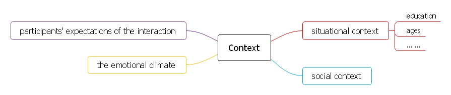

High-context and low-context cultures
&&&&&
Q: What areHigh-context and low-contextculture ?
A: Terms used to describe cultures based onhow explicitthe messages exchanged are andhow muchthe context means in certain situations. (Introduced by the anthropologist Edward T.Hall in his 1976 book Beyond Culture.)
Context as a relativistic metric of culture
Higher-context culture ——————— Lower-context culture
- African ———————————– Australian
- Arabic ———————————— Dutch
- Brazilian ——————————— English Canadian
- Chinese ———————————- English
- French Canadian ———————– German
- French ———————————— New Zealand
- Greek ————————————- United States
- Hawaiian
- Indian
- Italian
- Irish
- Japanese
- Korean
- Latin
- Americans
- Russian
- Southern United States
- Spanish
How higher context relates to other cultural metrics
Diversity
&&&&&
High-context:
- common in the
Asiancultures than in European.- common in countries with low
racialdiversity.- group/community is valued over the
individual.- the in-groups and
groupreliance/support favor higher-context cultures.- coexisting subcultures conducive to higher-context situations, where the small group relies on their common
backgroundto explain the situation, rather than words.
&&&&&
Low-context:
the need toaccommodateindividuals with a wide variety of backgrounds.
| 高语境文化 | 低语境文化 |
|---|---|
| 内隐，含蓄 | 外显，明了 |
| 暗码信息 | 明码信息 |
| 较多的非语言编码 | 较多的言语编码 |
| 反应很少外露 | 反应外露 |
| 圈内外有别 | 圈内外灵活 |
| 人际关系紧密 | 人际关系不密切 |
| 高承诺 | 低承诺 |
| 时间处理高度灵活 | 时间高度组织化 |
Language
Low-context:
- Explicit
- Verbose
Elaborated and Restricted Codes
Q: Where does the concept of elaborated and restricted codes come from ?
A: SociologistBasil Bernsteinin his book Class, Codes and Control.
Q: What is
elaborated code?
A: It indicates that the speaker is expressing his/her idea by phrasing from anabundantselection of alternativeswithoutassuming the listener shares lots of common knowledge, which allows the speaker to explain their ideaexplicitly.
Q: What is
restricted codes?
A: They are phrased from morelimitedalternatives, usually with collapsed and shortened sentences, therefore it requires the listeners to share a great deal ofcommon perspectivesto understand theimplicitmeaning of the conversation.
Collectivism and Individualism
- Collectivism — High-context cultures
- Individualism — Low-context cultures
Stability and Durability of Tradition
High-context culture
Facial Expression
Q: What are the
6basic emotions or universal language of emotion ?
A: Happy, surprise, fear, disgust, anger and sad.
Marketing perspective
Q: What is the difference between Japan and the US about the Mcdonalds advertising ?
A: Japanese version uses morecolors, movements and sounds, while the American version is morestraight forward.
Conclusion
High-context
- Collectivism
- Stable and durable tradition
- Strong sense of tradition and history
- Little change over time
- Native Americans over new comers
- Higher barrier for development
- Subtler facial expression
- Shared and taken-for-granted background knowledge
Low-context
- Individualism
- Fast change
- Generation gap
- Overload of information
- Exaggerated facial expression
Couse Notes

| Higher context | Lower context |
|---|---|
| Implicit | Explicit |
| How is said is more important than what is said | Clear |
| Relational | Verbose |
| Collectivist | |
| Intuitive | |
| Contemplative |
本文地址 https://didongdongdi.github.io/2018/10/12/Intercultural-Communication-5/